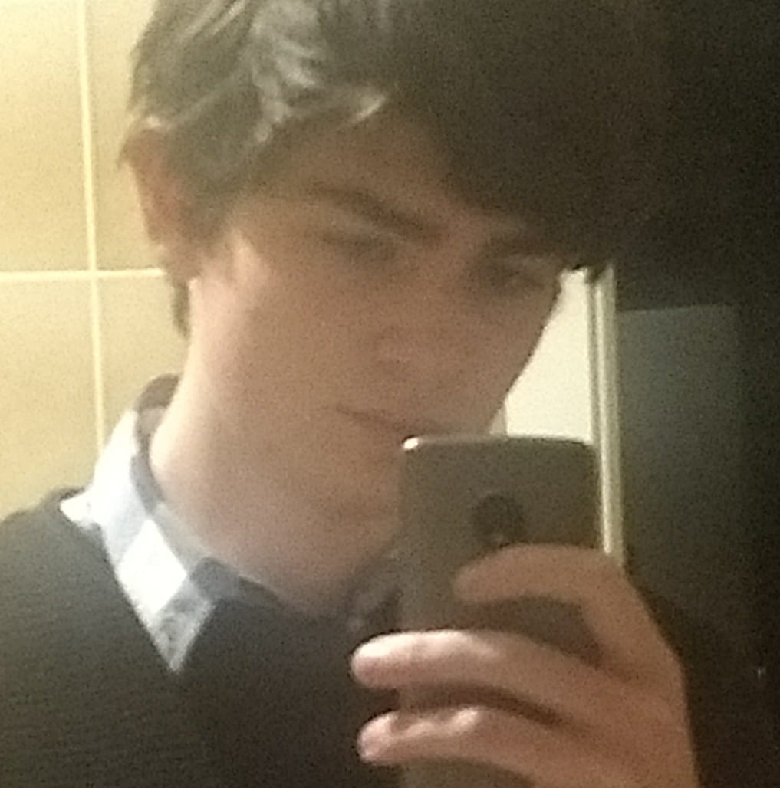

Personal Information

Name:Isaac Wilfrid miles
Student ID: s3809895
Student email: s3809895@student.rmit.edu.au
I was born in England, my mother is English and my father is Welsh. I moved to Australia when i was 6 years old and have lived here ever since.
Education wise I have my VCE and a diploma in information technology from RMIT. I can speak some German and that’s all there is when it comes to second languages. When it come to hobbies I like to read books, I also paint Warhammer and assemble Gunpla. An interesting thing about me is I am a twin, non identical though.
IT Interest
I have two main interests in IT, the first being game development and the second is cyber security. I can't say I know when the interest in game development started since i've been playing games my whole life. Security wise my interest started when one of my friends showed me how unsafe most peoples internet is back when i was 14. Like i mentioned before i have a diploma in information technology and including using computers my whole life is my total it experience. I chose to study at rmit because i liked the environment and it was easy to get to, i liked it enough to study here twice. What I hoped to learn from this course is mainly how to program. I've tried to learn it by myself but I never got far. It also helps that the course teaches industry standards and other things I might not have thought to learn such as UX design.
Ideal Job
Personally I would want to make games or programs myself but I also really enjoy Bethesda games so if I had to work anywhere it would be there.
The role would require designing and programming gameplay features as well as optimizing code.
I chose this role for two main reasons. Firstly i want to be a programmer, it’s just what i've wanted to be for as long as i can remember and what little i've done i have enjoyed i just struggled to understand larger concepts. Secondly i chose this because i like in depth gameplay features and i would like to design a game with them.
The position requires a bachelor in computer science and experience with the games industry and programming on multiple platforms helps as well as experience with their previous games, bethesda is a high profile company so it has a high bar of entry which means a lot of experience is likely needed to get the job. Of all those requirements i only have experience with their games so essentially nothing. To meet as many of these requirements as i can i will start by finishing the bachelor of IT and move on to a bachelor of computer science. I could hopefully get a job from there but I will likely need to get more experience working at other studios for a while to more suitably meet the requirements.
This plan will likely change and the question of whether or not I would want to leave a job to work for bethesda.
Personailty Tests
Myers Briggs

The Virtuoso ISTP-A as according to the myers briggs personality is a person who is creative and practical, they like to create and design stuff. spontaneous and rational, they can think things out quickly and with logic. They are also relaxed, not worrying what the future might bring.
The virtuoso can also be stubborn, ignoring other ideas or criticisms. They can be private, reserved and insensitive making it hard for people to understand them and coming off as rude.
In a team a virtuoso are often more interested in the work than the team, they can often work for an entire projects with single minded determination the entire time but again, can take criticism with less than superb enthusiasm. They work well as colleagues as they aren't offensive to people by nature, being quite reserved and quiet.
Five factor Personality

Extroversion
Similarly to the myers briggs test my extroversion was lower than average or in the low percentile and i could have figured that out with the test so that's all is good. I can see this as a problem when trying to form or work in a team since communication is key.
Emotional stabability
same with the extroversion i know im pretty stable, no outbursts of emotion just milquetoast reactions to anything negative or positive for the most part. This is good in a team, less likely to get into fights or have falling outs.
Agreeableness
in this category i'm slightly more agreeable than most people which i can see, i don't really fight people on their positions and i think i can see where most people come from. This is good in a team, agreeableness means an easier time understanding and getting along with each other.
Conscientiousness
I figured I would have scored lower on this, it says people who score high on this are organised and diligent which to an extent is true about me but I'm probably less diligent than most people but I would say I am organised. When I say I'm less diligent than most I mean I have trouble finding the motivation to do things but I can plan well so it shouldn't be too much of an issue when working in a group.
Imagination/intellect
much like all other categories my score was about the same as most people but it's still a high score which i think is good. The trait is related to critical thinking and unique problem solving. When working in a group this can be good because it allows your project to stand out or better suit the needs of the project.
Five factor Personality

My learning style is mostly visual meaning I like to learn by watching others and with visual learning aids. As far as i can tell this doesn't have much relation to working in a group but if i had to say anything i think this will work well, it can be easy to learn from teammates by watching them. This being how i learn rather than the group learns together but i guess i'll see.